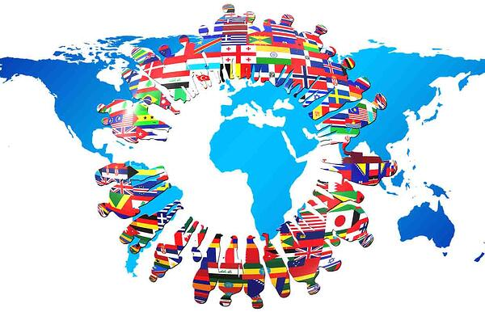
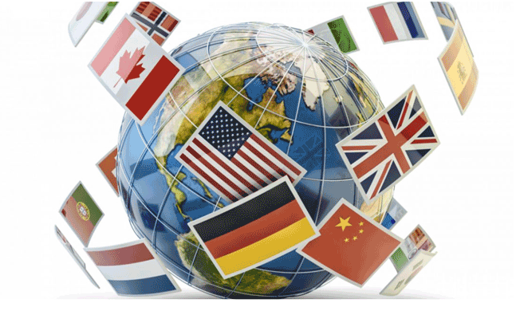
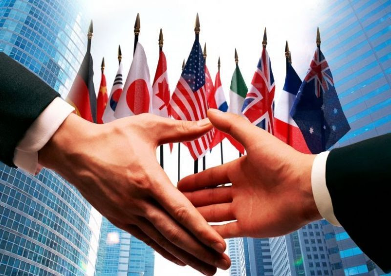

  
Selamat Datang Pak Agus, Pak Kris, Pak Arya, Bu Yustin, dan teman-teman di Web IL Kolaborasi PPKN - IPS - TIK saya. Perkenalkan saya Gabriella Michelle Budojo dari kelas 93 no. absen 9. Di dalam web saya, terdapat penjelasan lengkap beserta tujuan dari kerjasama internasional secara bilateral, regional, dan multilateral. Juga terdapat penjelasan mengenai SDGs serta penerapannya.
Untuk PPKN, saya fokus secara spesifik kepada hubungan antara negara Kenya dengan Indonesia. Untuk IPS, saya fokus secara spesifik kepada tujuan SDGs yang keempat, yaitu Pendidikan Berkualitas.
Kami sebagai manusia tentunya tidak bisa hidup sendirian. Bahkan, negara kita yang beragam ini tetap butuh hubungan dan kerjasama dengan negara-negara lainnya. Kita semua ada kekurangan dan kelebihan, dan kita harus saling melengkapi. Hal ini juga berlaku pada negara-negara yang ada di dunia ini. Kerjasama ini disebut dengan istilah Kerjasama internasional, yaitu sebuah bentuk kerjasama yang melibatkan negara-negara di seluruh belahan dunia untuk menyelesaikan masalah atau isu yang cenderung bersifat global atau untuk mencapai tujuan bersama.
Kerjasama internasional bermanfaat dalam pengurangan konflik dan dapat menyelesaikan perselisihan dengan damai. Kerjasama internasional dapat menjadi solusi masalah global seperti krisis pangan, kemiskinan, perubahan iklim, dll. Kerjasama internasional juga dapat meningkatkan kesejahteraan di negara-negara tertentu melalui saling berbagi pengetahuan, teknologi, dan sumber daya. Terakhir, kerjasama internasional juga dapat membantu menciptakan sistem perdagangan yang adil dan memfasilitasi pertumbuhan ekonomi.
Tentunya, dengan banyak sekali negara-negara dalam suatu kerjasama internasional, pastinya akan ada tantangan-tantangan. Salah satunya, yaitu perbedaan kepentingan yang seringkali menghambat tercapainya kesepakatan bersama. Ada pula beberapa negara yang lebih berkuasa dibandingkan negara lain, secara ekonomi maupun politik, yang menyebabkan ketidaksetaraan dalam pengambilan keputusan internasional. Selain itu, ada negara-negara yang terkadang tidak ingin memenuhi kewajiban yang telah disepakati bersama.
~ Selamat Membaca, Semoga Menikmati, Tuhan Memberkati! ~